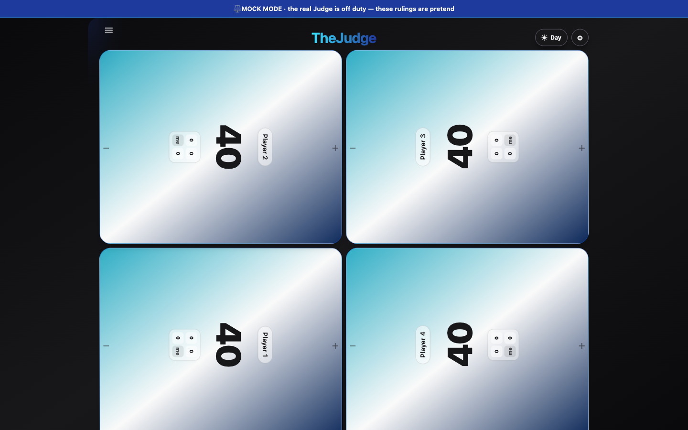
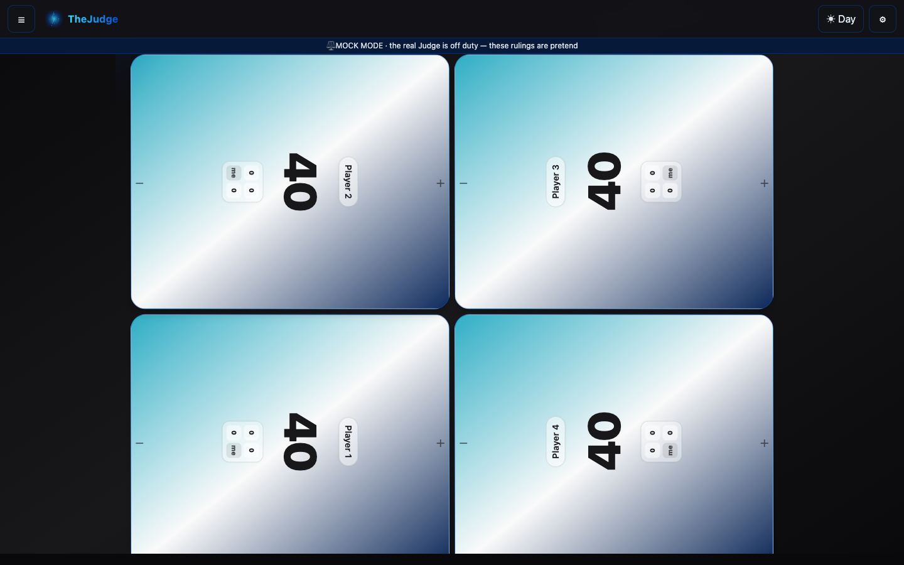

UI re-imagining — direction 1
One clickable mockup per in-scope flow, each viewable at phone (390×844) and desktop (1440×900) width by resizing the window or using your browser's device toolbar — the page itself is the mockup at both sizes, there is no separate screenshot for these four. The one exception is Player Life Tracker, out of scope for its own redesign: its before/after screenshot pair (below) proves shared chrome reaches it with no drift to its own screen.
Shared chrome & Menu
Open mockupQuick Question
Open mockupIn-Depth Question
Open mockupTrade Balancer
Open mockupPlayer Life Tracker — before / after


What this package ships
Durable product truth in PRD/sections/
(REQ-200-REQ-205 plus eleven amendments)
and this static mockup tree. No apps/frontend or
apps/backend code changed. See
docs/design/ui-reimagining/README.md for the full
file map.